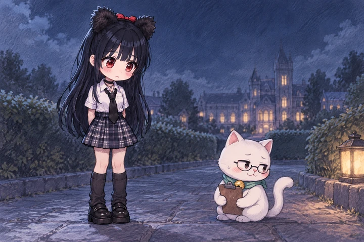
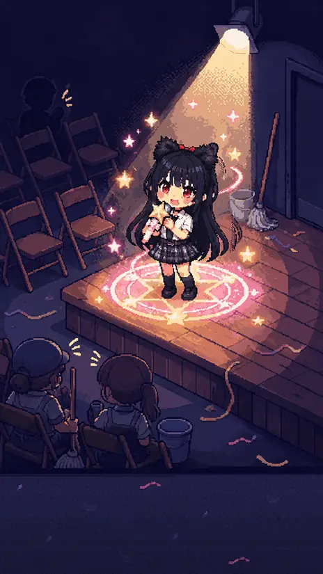
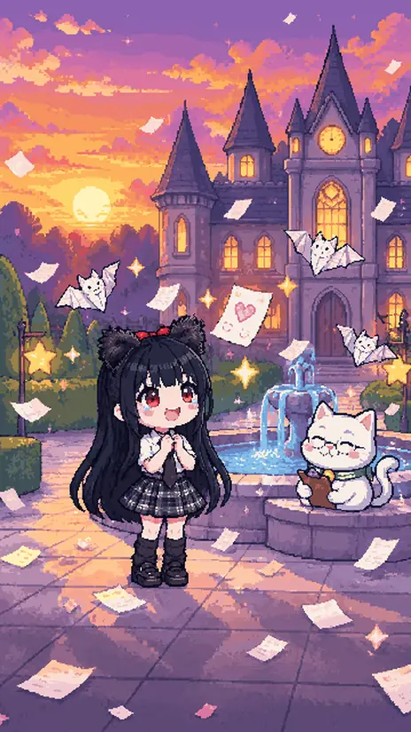
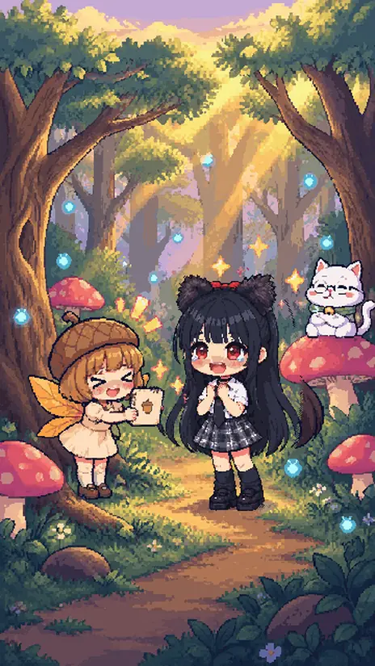
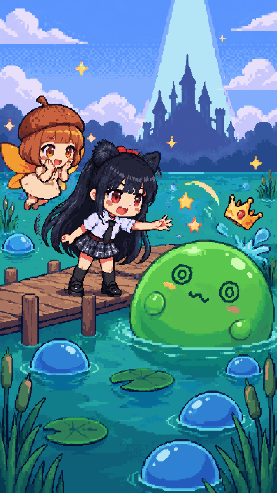
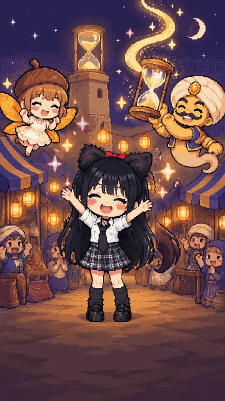
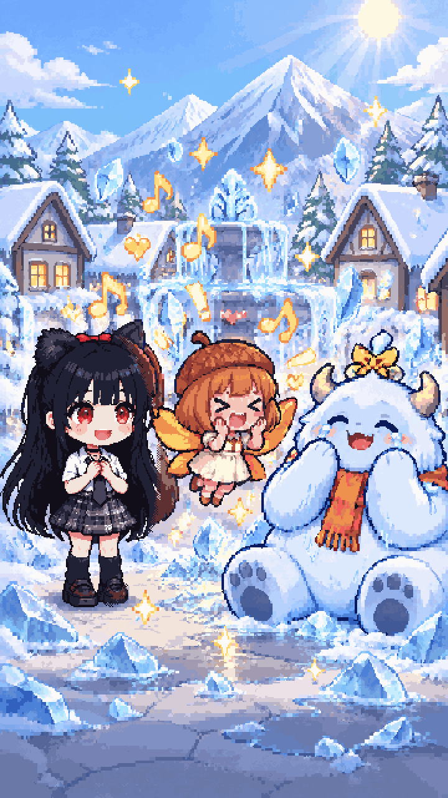
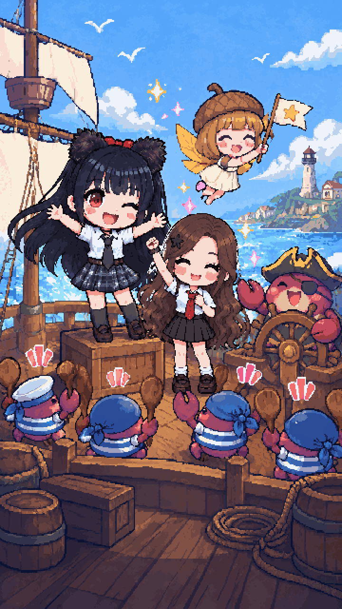
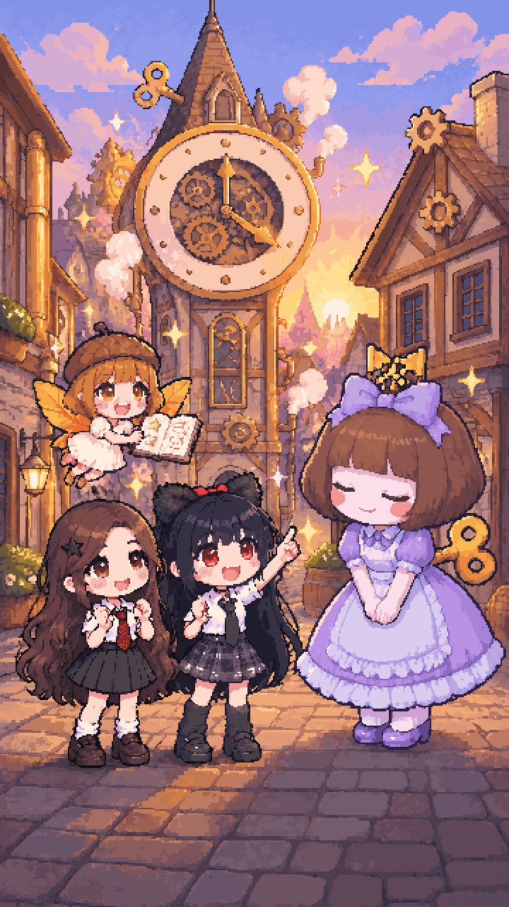

자동 공격
움직이기만 하면,
공격은 알아서.
세로 화면에서 한 손으로 움직이기만 하면 돼요.
이세계 히어로
한 손으로, 한 판 3분.
귀여운 도트 마법소녀와 함께하는 뱀서라이크.
Android용 · 기본 플레이 무료
플레이
쉬는 시간에 한 판, 자기 전에 한 판.
자동 공격
세로 화면에서 한 손으로 움직이기만 하면 돼요.
카드 3장
카드 3장 중 하나를 골라 무기와 능력을 키워요. 매 판 달라지는 나만의 빌드예요.
무기 · 패시브 · 진화
무기와 짝이 맞는 패시브를 모으면 진화해요.
한 판의 길이
길어도 5분쯤이에요. 보스 무대는 보스를 쓰러뜨릴 때까지 이어져요.
이야기와 무대
챕터마다 새 마물과 새 규칙이 기다려요. 챕터 끝에는 킹 슬라임, 모래시계 지니 같은 보스 무대가 열려요.
동료
챕터 5 · 10 · 15 · 20 · 25 · 30의 결전을 깨면 새 동료가 합류해요. 고른 동료로 새 무대에도 도전할 수 있어요.
처음부터
고양이 매니저예요. 처음부터 설희와 함께해요.
챕터 2 · 속삭임의 숲
설희의 팬 1호 요정이에요. 1-5를 깨면 나비와 함께 도움 필살기로 힘을 보태요.
5장 결전 뒤 합류
혼자 박자를 세는 버릇이 있어요.
10장 결전 뒤 합류
짧고 정중하게 말해요. 안경을 한 번 고쳐 쓰는 버릇이 있어요.
15장 결전 뒤 합류
조용히 그림을 그리는 친구예요. 말끝을 흐려요.
20장 결전 뒤 합류
무뚝뚝하지만 책임감 있는 조명 감독이에요. “조명은 꺼지면 안 돼요.”
25장 결전 뒤 합류
밝고 시끄러운 별빛 축제 MC예요. 남 칭찬이 특기예요.
30장 결전 뒤 합류
차분하고 다정한 존댓말을 써요.
이야기
프롤로그와 챕터 1~30화를 웹툰으로 볼 수 있어요. 챕터를 깰 때마다 그 화가 열리고, 건너뛰어도 돼요. 갤러리에서 지난 화를 다시 볼 수 있어요.









한 손이면 충분해요. 3분 뒤, 첫 무대가 끝나 있을 거예요.
Google Play에서 받기Android용 · 기본 플레이 무료(인앱 구매 있음) · 만 16세 이상 이용자 대상